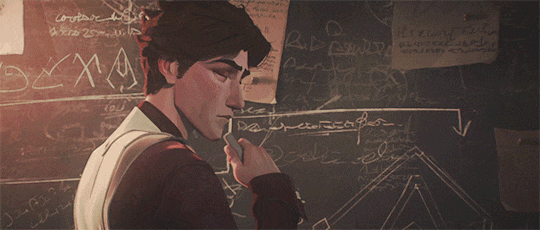

O ARAUTO DAS MÁQUINAS
Viktor, o arauto de uma nova era de tecnologia, devotou sua vida ao avanço da humanidade. Um idealista que busca elevar o povo de Zaun a um novo nível de compreensão, ele acredita que somente ao aceitar a evolução gloriosa da tecnologia será possível que a humanidade alcance seu verdadeiro potencial. Com um corpo melhorado por aço e ciência, Viktor é zeloso na sua busca por este brilhante futuro.
